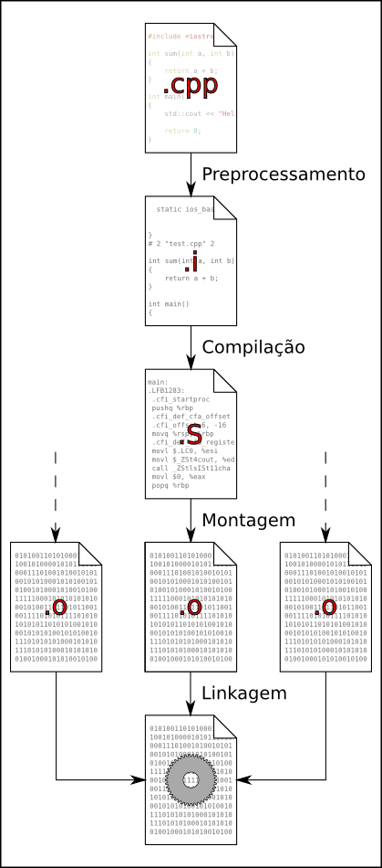

Compilação
A próxima etapa é a de compilação, que traduz o código C++ em código assembly. Esse código, em conjunto com vários outros arquivos, são linkados, produzindo assim o executável final (ou biblioteca).
Essa é uma das partes do livro que depende de ambiente (Sistema Operacional, compilador...) para que você possa reproduzir. Apenas para fins didáticos, essa seção utilizará o Sistema Operacional Linux e o compilador GCC, invocado pela linha de comando (terminal). Considere o seguinte programa:
main.cpp
#include <iostream>
double f(double x)
{
return 3*x*x + 2*x - 1;
}
double g(double x)
{
return 3*f(x + 1.);
}
int main()
{
std::cout << f(3.) << std::endl;
std::cout << g(4.) << std::endl;
}
Pela linha de comando, utilizando GCC, é possível compilar o programa acima invocando o comando g++ main.cpp, o que
produz um executável de nome a.out. Imagine, porém, que o código do main.cpp começa a crescer, e está agora com 1000
linhas de código. Outras pessoas começaram a trabalhar no mesmo projeto. Não seria fácil manter e evoluir o programa
em um só arquivo grande com várias pessoas mexendo nele todos os dias.
Essa é uma das motivações para separar o projeto em vários arquivos. Move-se, portanto, a implementação de f e de g
para os arquivos f.hpp e g.hpp:
main.cpp
#include <iostream>
#include "f.hpp"
#include "g.hpp"
int main()
{
std::cout << f(3.) << std::endl;
std::cout << g(4.) << std::endl;
}
f.hpp
double f(double x)
{
return 3*x*x + 2*x - 1;
}
g.hpp
#include "f.hpp"
double g(double x)
{
return 3*f(x + 1.);
}
Compilar esse pequeno exemplo produz a seguinte mensagem de erro:
$ g++ main.cc
In file included from g.hpp:1,
from main.cc:3:
f.hpp:1:8: error: redefinition of ‘double f(double)’
1 | double f(double x)
| ^
In file included from main.cc:2:
f.hpp:1:8: note: ‘double f(double)’ previously defined here
1 | double f(double x)
| ^
Conforme explicado no capítulo anterior, a ausência das include guards pode ser perigoso, como é o presente caso.
Isso porque tanto main.cpp quanto g.hpp incluem f.hpp, gerando uma redefinição da função f.
Isso fica bem claro quando verificamos o output da etapa de pré-processamento isoladamente com g++ -E main.cc.
O problema pode ser resolvido, incluindo os include guards (#ifndef ... #define ... #endif), conforme código abaixo:
f.hpp
#ifndef __F_HPP
#define __F_HPP
double f(double x)
{
return 3*x*x + 2*x - 1;
}
#endif
g.hpp
#ifndef __G_HPP
#define __G_HPP
#include "f.hpp"
double g(double x)
{
return 3*f(x + 1.);
}
#endif
O novo código compila e roda normalmente, porém, não é recomendado manter as implementações das funções em headers files (arquivos .hpp),
pois a medida que o projeto cresce, o processo de compilação começará a ficar lento. Além disso, uma modificação em
qualquer header file ocasionará na recompilação de todo o projeto (Ou seja, ocasionaria em um "rebuild").
Dessa forma, é comum separar a declaração das classes e funções em arquivos hpp e a definição das mesmas em arquivos
cpp, exceto aqueles que contém templates. Nosso exemplo segue da seguinte forma:
main.cc
#include <iostream>
#include "f.hpp"
#include "g.hpp"
int main()
{
std::cout << f(3.) << std::endl;
std::cout << g(4.) << std::endl;
}
f.hpp
#ifndef __F_HPP
#define __F_HPP
double f(double x);
#endif
f.cc
#include "f.hpp"
double f(double x)
{
return 3*x*x + 2*x - 1;
}
g.hpp
#ifndef __G_HPP
#define __G_HPP
#include "f.hpp"
double g(double x);
#endif
g.cc
#include "g.hpp"
double g(double x)
{
return 3*f(x + 1.);
}
Para que os novos arquivos estejam acessiveis no momento da compilação, o processo de compilação precisa ser alterado.
Precisamos, agora, colocar todos os arquivos .cpp para que sejam compilados e linkados juntos:
g++ f.cc g.cc main.cc
Conforme notado anteriormnete, nos #includes locais, utiliza-se aspas duplas para incluir os arquivos de projeto, e
utilizamos < e > para incluir arquivos de sistema (iostream, por exempo). Arquivos incluídos com aspas duplas são
arquivos presentes da mesma pasta em relação ao arquivo que está sendo incluído. Arquivos incluidos com < e > são
buscados em uma lista pré-definida de pastas, no processo de compilação. É possível adicionar uma pasta nessa lista,
utilizando a opção de compilação -I [caminho]. De fato, não é raro encontrar projetos que acabam adicionando a pasta
corrente (local) nessa lista e utilizando apenas < e > em todos os includes. Isso pode ser uma vantagem, por exemplo,
quando estamos reestruturando o projeto e movendo arquivos. Trocando todos os includes do nosso exemplo para atuarem
com < e >, o processo de compilação se tornaria-se g++ f.cc g.cc main.cc -I...
O processo de compilação da forma como está invocado acima, na verdade inclui o processo de pré-processamento (que já
vimos) e o processo de linkagem. É possível invocar o compilador individualmente para cada arquivo arquivo .cpp e,
posteriormente, invocar o processo de linkagem separadamente. Faremos isso para fins didáticos:
g++ -c g.cc -I.
g++ -c f.cc -I.
g++ -c main.cc -I.
Esses comandos geram os arquivos chamados código objeto: g.o, f.o e main.o. Esses arquivos não são executáveis.
Para finalizar o processo de compilação, é necessário invocar (Não estou utilizando diretamente o linker nesse caso): g++ f.o g.o main.o.
Uma representação do que foi feito é mostrada abaixo:

É importante ter em mente essas duas etapas como processos separados.
Erros de compilação (sintaxe e pré-processamento, por exemplo) acontecerão mesmo quando você tentar compilar o arquivo
isoladamente. Erros de linkagem (tais como undefined reference) acontecerão apenas quando você tentar compilar todos
os arquivos em conjunto ou quando você estiver executando a etapa de linkagem manualmente.